Why Ambience?
Ambience is dedicated to helping you achieve your goals by improving your concentration and focus using sounds designed to increase productivity
- Get Help Anytime
We are constantly seeking feedback from our customers on ways to improve the bot. Our staff and development team are available anytime to help resolve issues or gain advice. Please join our discord server to reach out to us.
- Easy to Use
Ambience offers a simple, easy-to-use interface along with a straightforward set of commands to get bot up and running on your server in no time!
- Awesome Product
Since Ambience is an open source project, we have a plethora of talented developers willing to make improvements and modifications to our bot.
- Open Source
Ambience's code is available for anyone to work on. Please visit our GitHub repo to get more information on how to make contributions to the bot.
Features
Ambience contains many intuitive features that enables users to enjoy a wide range of commands easily.
Play Sound
Play calming and peaceful sounds from 10+ categories. Our sounds are handpicked and selected to maximize your concentration and focus. Furthermore, you can interactively search for suitable sounds in different categories using the play command.
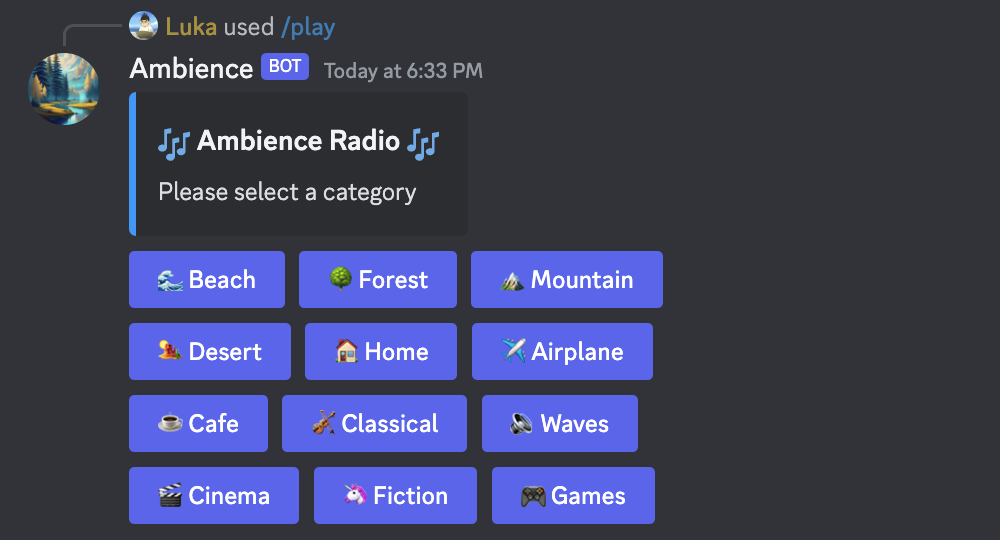
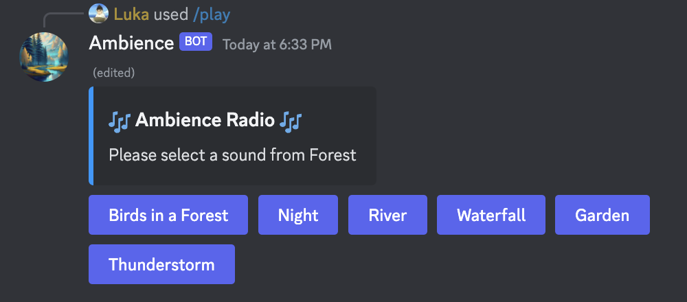
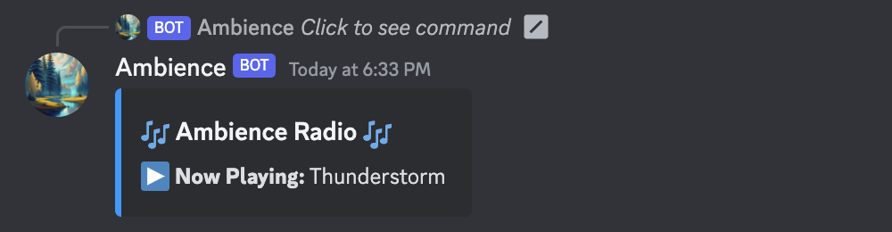
View Sounds
Along with browsing categories with play command, Ambience provides more commands for users to view the available sounds. You can either list all of the sounds, or list them by category.
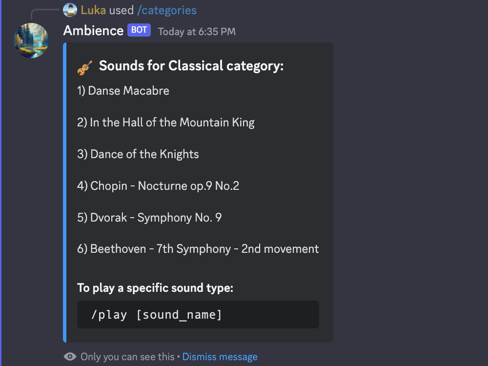
Randomize Sound
Don't know what to play? You can choose a calming sound by chance and focus on what's important right away.
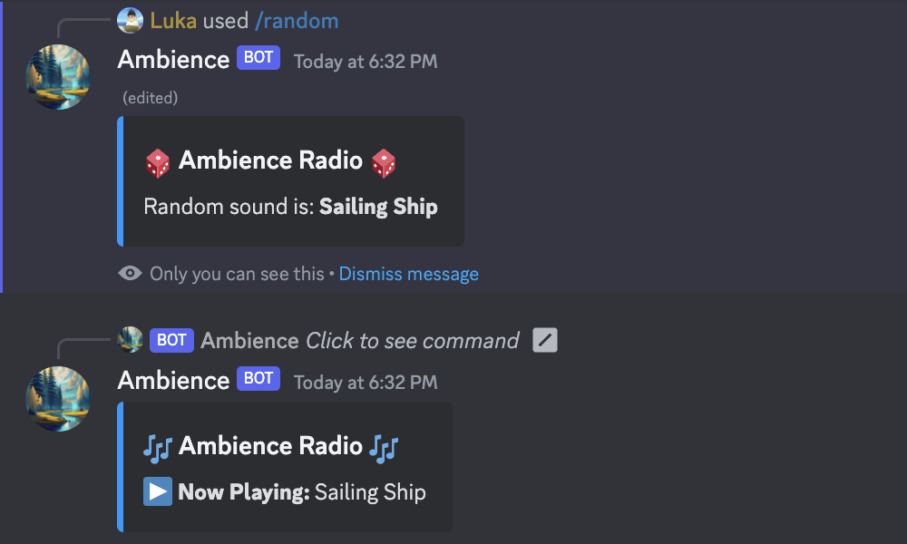
Let's Get you Started!
Invite Ambience to your Discord server to improve your focus and concentration in no time! Instructions on how to invite Ambinece are listed below.
Inviting Ambience
- Step One: Invite the Ambience bot by clicking the button below:
Invite Bot
- Step Two: Once you see the Discord invite menu, click the "Select a server" button and select a server you would like to add Ambience to.
- Step Three: On the Invite Authorization page for Ambience, make sure all the checkboxes are checked and click "Authorize".
- Step Four: Validate that your not a robot by clicking on the checkbox next to "I am not a robot".
- Step Five: Go back to Discord and Ambience should be added to your server!
Playing a Sound
To play one of Ambience's sounds use the command: /play [sound_name] or /play. You can type /random if you want to play a random sound.
Viewing Sounds
In order to view all of Ambience's sounds, please type: /sounds. To view all categories, type /categories. To view sounds within a specific category, use /categories [category_name].
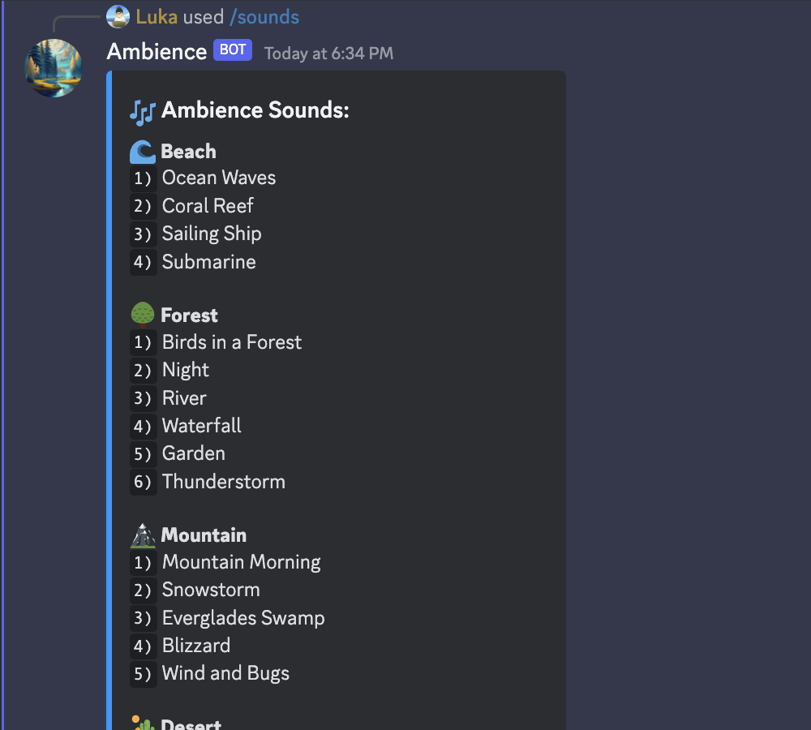
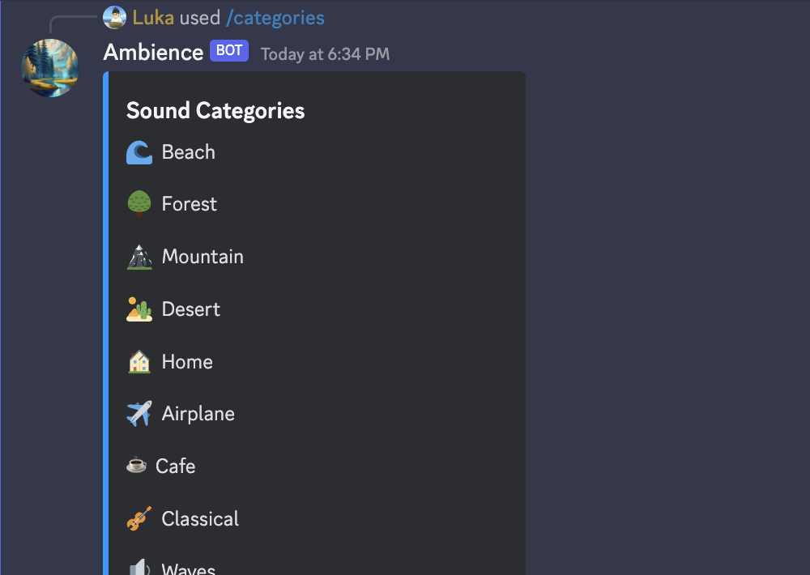
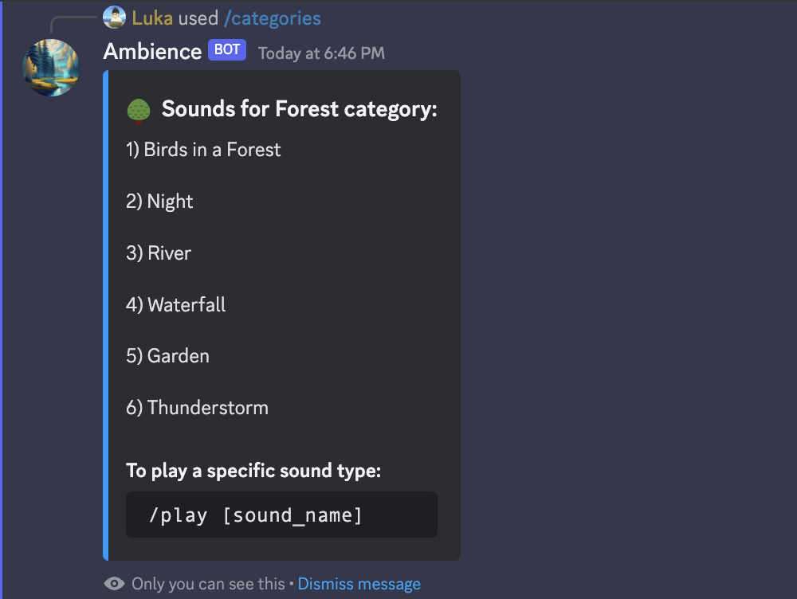
Sound Management
To stop the current sound, type: /stop, it will disconnect from the Ambience Radio.
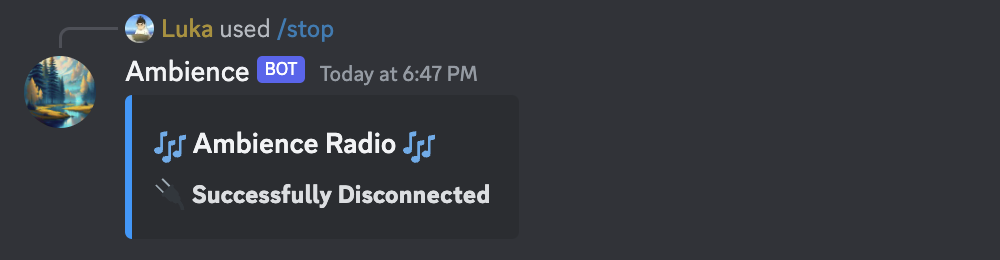
Getting Help
If you want to see all the available commands, type: /help. You should type /help [command_name] if you want to get help for a specific command.
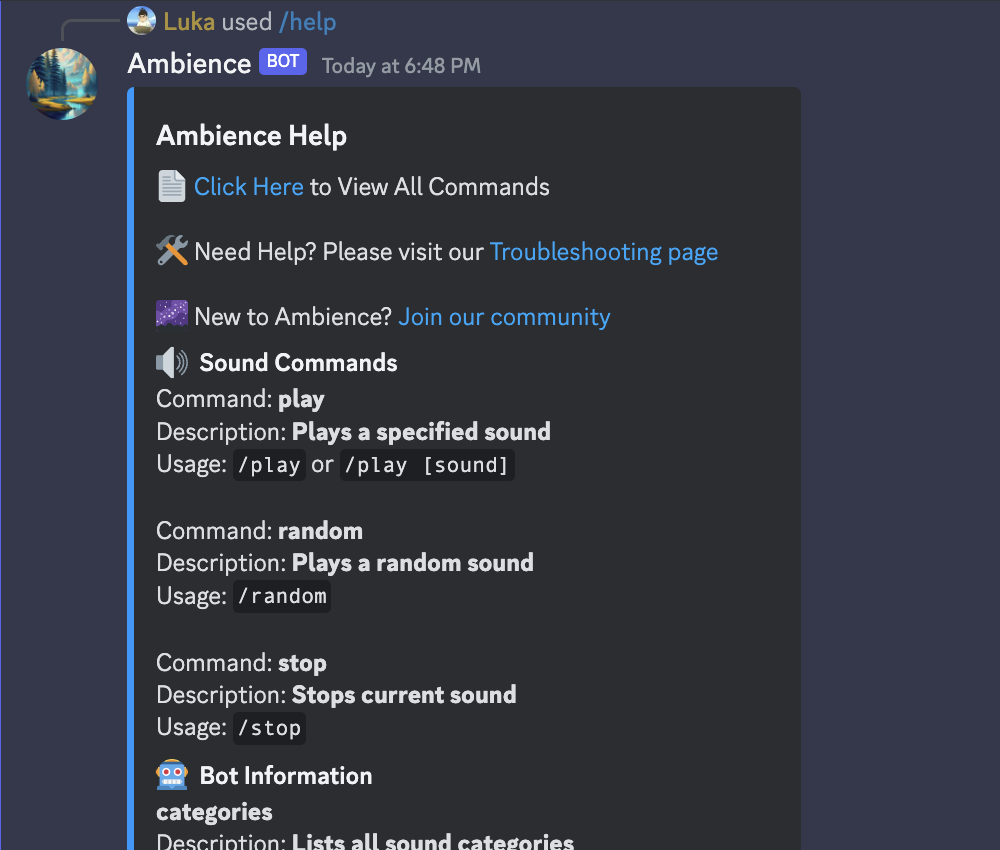
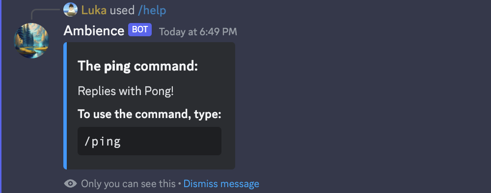
Sound Commands
Play a sound by choosing it from categories:
/play
Play a specific sound:
/play [sound_name]
Play a random song from Ambience:
/random
Stop the current song:
/stop
Bot Information Commands
Get help about all commands:
/help
View information about specific command:
/help [command_name]
List all categories:
/categories
List sounds in a category:
/categories [category_name]
List all sounds:
/sounds
Check bot health:
/ping
Ambience Server
Have fun playing around with the Ambience bot while making meaningful friendships with like-minded people on our Ambience server! Please click the button below to join our community!
Join the Community
Contribute Code
The Ambience bot is open sourced and the code is available to anyone on the internet. If you would like to make a contribution to the Ambience bot please visit our Github repo and read our README to learn how to contribute to our codebase.
Contribute
Spread the Word
The Ambience bot was specifically created to help people concentrate and improve their productivity. Please consider telling your friends about the Ambience bot to help them improve their focus. The more the merrier!
FAQs
How do I see all the Ambience's commands?
To see all of Ambience's commands please visit this section of the documentation. Furthermore, you can view all of Ambience's commands by typing /help on the Discord chat.
How can I invite Ambience to my server?
You can invite the Ambience bot by clicking this link. To view the steps to invite Ambience to your Discord server, please visit this section of the documentation.
How do I play a sound in Ambience?
To play a sound in Ambience you must type /play [sound_name] where [sound_name] is the name of your desired sound. You could also just type /play to view all of Ambience's categories and choose a song like that.
Where can I get help if Ambience isn't working?
Our devoted staff is available at almost anytime to get you the help you need. Please ask for help on the Ambience server and someone will get to you soon.
Ambience Server
The Ambience is server is available to any member of the community that would like to get to know the Ambience bot better as well as receive support from any member of our staff. If you would like to join, please click this link.